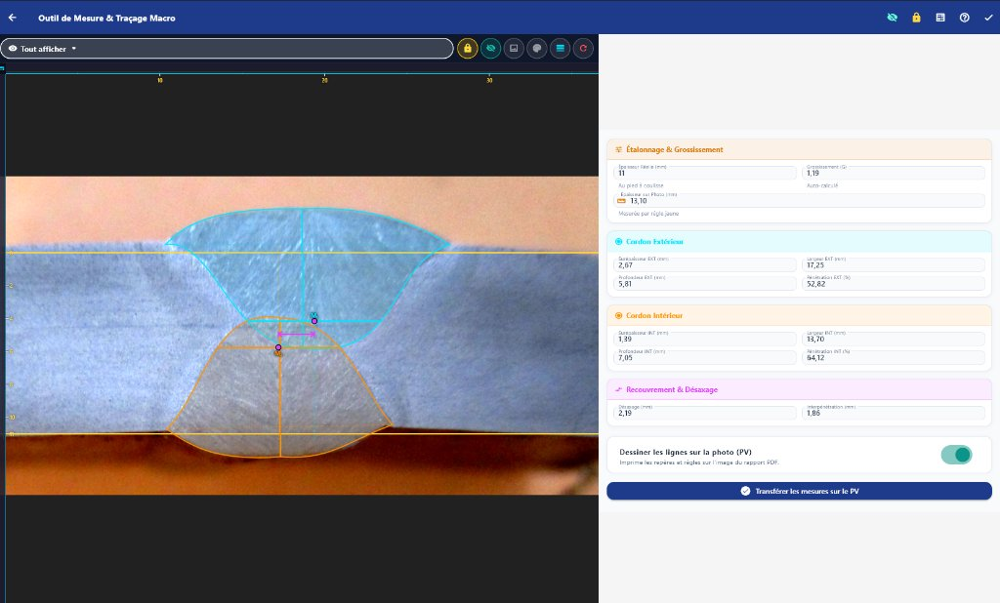

La rigueur du procès-verbal macrographique.
Traçabilité des soudures et calculs dimensionnels immédiats pour laboratoires d’essais mécaniques.
Coupe réelle SAW (API 5L)


Protocole d’édition en 5 étapes
Workflow normé de la matière première aux signatures certifiées.

Étape 01 · Traçabilité
Identification et Nuances
Numéro unique, dates, client et nuances d’acier (API 5L, ISO 15614-1).


Poste de mesure instrumentale
Tracé vectoriel interactif et cotation dimensionnelle assistée par étalonnage.

Étalonnage optique
Calcul du ratio pixel/millimètre au centième.
Transfert direct
Injection immédiate des cotes sur le PV officiel.
Distributions officielles disponibles
Fichiers exécutables complets et autonomes, sans dépendances externes.
Accès Web Direct
Utilisable en plein écran sur Chrome, Edge ou Firefox.
Windows 64 bits
Installeur autonome pour postes sous Windows 10 et 11.
Android
Paquet APK pour tablettes d’inspection et smartphones de contrôle.